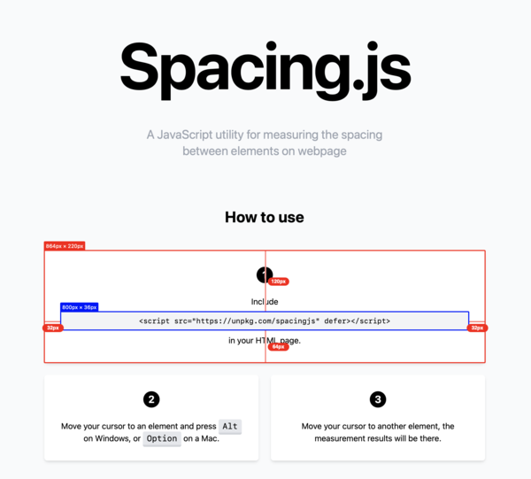
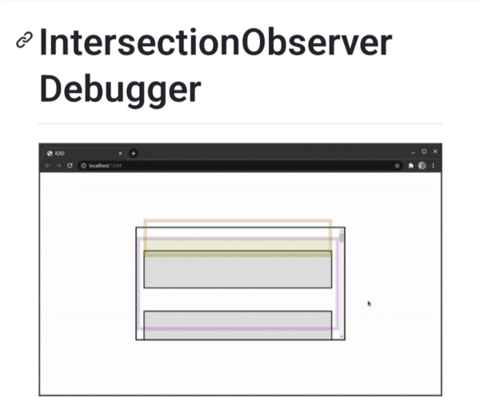
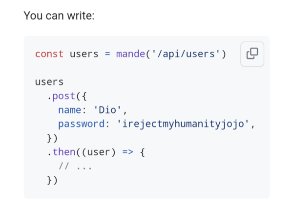
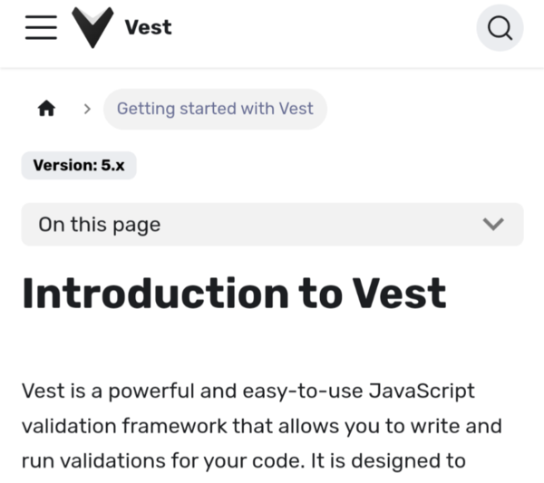
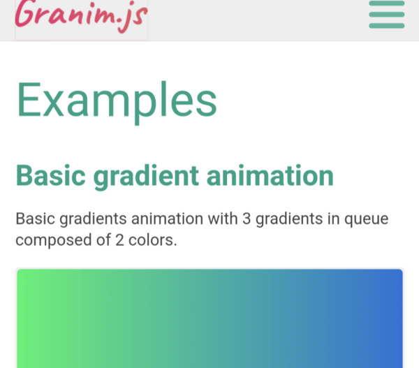
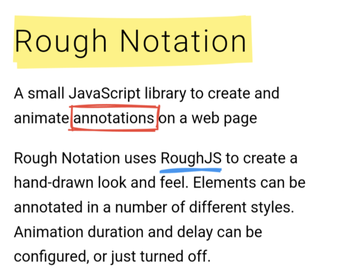
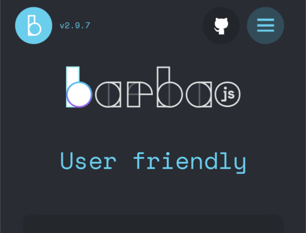
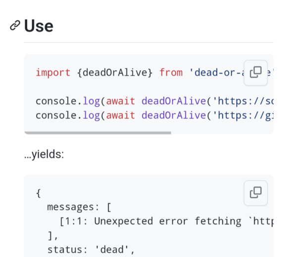
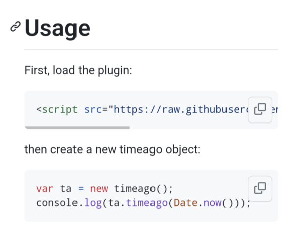

Discoveries #27 - JavaScript Tools
This month's Discoveries are about small, large, new and somewhat older JavaScript tools that can make life and coding easier for developers. Why reinvent the wheel when someone has already done it. Happy Coding :)
- Spacing.js - Measuring
- Ukiyo.js - Parallax Effect
- IntersectionObserver Debugger
- mande - Fetch Wrapper
- Vest - Declarative Validations Framework
- Granim.js - Gradient Animation
- RoughNotation
- barba.js - Page Transitions
- dead-or-alive - URL Checker
- timeago - Format Date
Spacing.js - Measuring
by Steven Leihttps://spacingjs.com/
Have you ever wanted to measure your web layout during development? Steven has a solution for you. Either as JavaScript integrated in HTML or as a Chrome plugin.
Ukiyo.js - Parallax Effect
by Yiteng Junhttps://github.com/yitengjun/ukiyo-js
This ES6 library is an easy to use tool for creating efficient background parallax effects for <img>, <picture>, <video> elements and background images. It can be called manually via JavaScript or automatically via a special class or data attribute.
IntersectionObserver Debugger
by Rodrigo Pombohttps://github.com/pomber/intersection-observer-debugger
This tiny script is a debugging tool, included during development, which shows you the root, target, and intersection every time an IntersectionObserver is triggered.
mande - Fetch Wrapper
by Eduardo San Martin Morotehttps://github.com/posva/mande
With mande Eduardo has written a great wrapper for JavaScripts fetch(), which not only relieves you of a lot of typing work, but also comes with a few useful extensions, e.g. for nuxt. This turns an API call into a one-liner.
Vest - Declarative Validations Framework
by Evyatar Alushhttps://github.com/ealush/vest
Vest is a declarative validation framework for validating form input that is as easy to use as the Mocha or Jest unit test libraries.
Granim.js - Gradient Animation
by Benjamin Blondehttps://sarcadass.github.io/granim.js/examples.html
Benjamin has created a library to animate gradients as complex as you need them. It supports pausing when it's not in view and different blending modes for images.
RoughNotation
by Preet Shihnhttps://roughnotation.com/
To emphasize something important on a sheet of paper, you sometimes use a highlighter. This library brings that to the web in an animated way. With a circle around it, underlined … or both, you're sure to attract attention.
barba.js - Page Transitions
by Multiple Contributorshttps://barba.js.org/features/user-friendly/
Barba is a library that allows you to create fluid and smooth transitions between pages on your website, while we wait for the View Transitions API.
dead-or-alive - URL Checker
by Titus Wormerhttps://github.com/wooorm/dead-or-alive
This URL checker ensures that links do not lead to nothing, whether on websites, in node projects or in service workers. It even checks anchor links for the presence of the element.
timeago - Format Date
by Whoever Titanium is...https://github.com/Titanium2099/timeago
'Your message was sent 5 minutes ago'. Notes like these are easy to bring into a web application with this script. It currently only supports English, but is easily customizable.
You can interact with this article (applause, criticism, whatever) by mention it in one of your posts or by replying to its syndication on Mastodon, which will be shown here as a Webmention ... or you leave a good old comment with your GitHub account.
In case your blog software can't send Webmentions, you can use this form:
Webmentions
No Webmentions yet...


 There are many Mastodon instances out there.
Tell me yours and I will redirect you to the share dialog of your server:
There are many Mastodon instances out there.
Tell me yours and I will redirect you to the share dialog of your server:
Comments